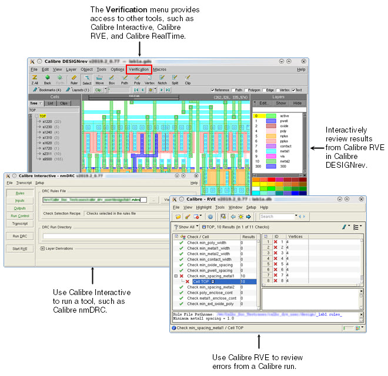

You can use
Calibre DESIGNrev in conjunction with tools, such as Calibre Interactive,
Calibre RVE, and Calibre RealTime, to perform a range of tasks within
the design verification flow.
Refer to “Calibre DESIGNrev Workflow” for an overview of a basic verification
flow using Calibre DESIGNrev and other tools.
Figure 1. Using Calibre DESIGNrev Interactively
with Other Calibre Tools